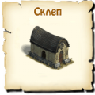

Получено: файл; исходный URL. Файл источника без перекодирования; авторство не установлено. Страница: источник.
Склеп
Браузерная версия; дата редакции не установлена- Тип
- Постройка
- Версия и дата
- Браузерная версия; дата редакции не установлена
Данные по источнику · браузерная версия; платформа не указана · не установлена
Предварительно: Строки восстановлены по значкам и ссылкам страницы; дата редакции и актуальность не установлены.. Требуется сверка.
- Стадия 1
- 5 брёвен + 5 камней + 500 монет
- Стадия 2
- 5 брёвен + 1 доска + 5 камней
- Стадия 3
- 5 брёвен + 3 металла + 3 цемента
- Производство
- Юнга: 1 найдёныш + 1 черничный крендель; зелёная краска: 1 грибная текила + 1000 монет; труба: 1 шестерня + 1 металл.
- Модернизация
- 7 белой краски + 50 любви + 20 красной черепицы
- Находки в копании
- редкая и звёздная коллекции


Данные по источнику · браузерная версия; платформа не определена · дата редакции не установлена
Предварительно: Автоматическое чтение цифровых пиктограмм и их подписей; знак ? означает нераспознанное количество, подписи могут содержать ошибки источника. Требуется ручная сверка каждой стадии.. Требуется сверка.
- Исходные подписи и цифры в первой колонке
- [Склеп] | [Доступен на 1-м уровне] | [Стоимость постройки] | 1000 | [Опыт за каждый этап строительства] | 10 | 10 | 20 | 30 | [Суммарный опыт] | 70
- Стадии по пиктограммам
- Стадия 1: 5 × Бревна + 5 × Камни + 500 × монеты Стадия 2: 5 × Бревна + 1 × Доска + 5 × Камни Стадия 3: 5 × Бревна + 3 × Металл + 3 × Цемент
Данные по источнику · Мой Мир (Mail.ru), историческая таблица · дата редакции таблицы не установлена
Предварительно: Текст таблицы Мой Мир. Некоторые обозначения валют и уровней на странице являются изображениями и могут быть потеряны при извлечении. Источники не обязательно независимы.. Требуется сверка.
- Название и данные первой колонки
- Склеп 1000 1 ур. или 0
- Опыт, стадии, производство и модернизация
- Опыт: 170 = 10+10+20+30+100(Модернизация) Стадии строительства: 5 Брёвна + 5 Камни + 500 Монеты 5 Брёвна + 1 Доска + 5 Камни 5 Брёвна + 3 Металл + 3 Цемент Создает: 1 Зелёная краска = 1 Грибная текила + 1000 Монеты 1 Труба = 1 Металл + 1 Шестерня Модернизация: 7 Белая краска + 50 Любовь + 20 Красная черепица Создает: Бонус-рулетка. Один раз в день крути рулетку, чтобы выиграть приз. Призы: 500-5000 Монет, 50-500 Опыт, 1-5-10 Любовь, 1 Супер-клей, 3 Мрамор, 1 Скотч, 3 Синяя черепица
Данные по источнику · браузерная версия; платформа не установлена · дата редакции списка не установлена
Предварительно: Прочитан список. Имена файлов пиктограмм приводятся как есть: они не гарантируют идентификацию материала. Alt-атрибуты источника содержат ошибки. Отдельная статья и дата не проверены.. Требуется сверка.
- Сведения из списка, включая имена файлов пиктограмм
- [рисунок: sklep.png] Доступен на: 1 уровне Стоимость: 1000 монет Даёт опыта: 70(10+10+20+30) Стадии строительства: 1. 5 [рисунок: Brevna.jpg] +5 [рисунок: Kamni.png] +500 [рисунок: gold.jpg] 2. 5 [рисунок: Brevna.jpg] +1 [рисунок: Doska.png] + 00 5 [рисунок: Kamni.png] Модернизация 1: 3. 5 [рисунок: Brevna.jpg] + 0 3 [рисунок: Metall.png] + 0 3 [рисунок: Cement.png] Модернизация 2: 4. 7 [рисунок: Belaya_kraska.png] +50 [рисунок: Lybov.png] +20 [рисунок: Krasnaya_cherepica.png] Производит: 1. 1 [рисунок: Zelenaya_kraska.png] = 1 [рисунок: Gribnaya_tekila.png] +1000 [рисунок: gold.jpg] 2. 1 [рисунок: truba.png] = 1 [рисунок: Shesternya.png] +1 [рисунок: Metall.png] После модернизации: Ежедневная бонус-рулетка, в которой можно выиграть монеты, опыт, любовь, супер-клей, мрамор, скотч, синюю черепицу
Данные по источнику · браузерная игра; платформа страницы не уточнена · 11.01.2014 — публикация; редакция неизвестна
Предварительно: Прочитана конкретная строка; старые сведения, у источника встречаются опечатки. Возможны заимствования, независимость от других сайтов не доказана.. Требуется сверка.
Данные по источнику · браузерная версия Мой Мир, сообщения участников форума · 03–15.07.2011
Предварительно: Фанатский источник; возможное копирование и изменения после публикации не исключены. Неподписанные иконки определены предварительно по именам файлов.. Требуется сверка.
- Наблюдения игроков
- 3 июля: 5 Любви; 4 июля: 500 монет и другой участник — 3 мрамора; 5 июля: 3 синей черепицы; 8 июля: 5000 монет; 12 июля: 500 опыта. Другой игрок упоминал суперклей.
- Ограничение
- Это отдельные сообщения участников форума, не полный состав рулетки и не вероятности. Ветка посвящена улучшенным постройкам и флагам; модернизация не может быть автоматически подтверждена для каждого сообщения.
Данные по источнику · историческая браузерная игра, площадка не указана · 05.05.2012 — дата публикации; дата редакции неизвестна
Предварительно: Сопоставлено по единственному точному названию; различные версии или одноимённые объекты могут различаться. Названия файлов и alt пиктограмм сохранены как подписи, не заменяют проверенную расшифровку; изображения и цены требуют ручной сверки. Независимость от zombi-ferma.ru и других сайтов не установлена.. Требуется сверка.
- Текст и пиктограммы источника
- [изображение: m_sklep.png] Стадии строительства: 1. 5 [изображение: Brevna.png] +5 [изображение: Kamni.png] +500 [изображение: Монеты; gold.jpg] 2. 5 [изображение: Brevna.png] +1 [изображение: Doska.png] +005 [изображение: Kamni.png] Модернизация 1: 3. 5 [изображение: Brevna.png] +03 [изображение: Metall.png] +03 [изображение: Cement.png] Модернизация 2: 4. 7 [изображение: Belaya_kraska.png] +50 [изображение: Lybov.png] +20 [изображение: Krasnaya_cherepica.png] Производит: 1. 1 [изображение: Zelenaya_kraska.png] = 1 [изображение: Грибная текила; Gribnaya_tekila.png] +1000 [изображение: Монеты; gold.jpg] 2. 1 [изображение: truba.png] = 1 [изображение: Shesternya.png] +1 [изображение: Metall.png] После модернизации: Ежедневная бонус-рулетка, в которой можно выиграть монеты, опыт, любовь, супер-клей, мрамор, скотч, синюю черепицу 1 цемент + 1 колоннада = "Твоя любовь на острове Любви" 1 цемент + "Твоя любовь на острове Любви" = "Твоя Любовь на главном острове" 1 цемент + "Твоя Любовь на главном острове" = "Хвост" 1 цемент + "Хвост" = "Найдёныш"
Связанные сущности
нет проверенных связей — требуется сверка.
Источники
- Таблица построек, строка «Склеп»
- Zombiemail: строка таблицы построек, часть 1, версия Мой Мир
- ZOMBIA: прочитана карточка в каталоге
- Адрес отдельной карточки, отдельный доступ не проверен
- Zommbie.at.ua: раздел 38 построек, запись 2014 года
- Прочитанная отдельная страница
- ZF.3dn: историческая карточка постройки